Chapter 3 시계열의 분해
이 장의 학습목표는, 고전적인 시계열 분해방법이 어떻게 계산되는지 이해하는 것이다. 이는 최근에 사용되고 있는 다른 방법들의 근간이 되므로 제대로 이해할 필요가 있다.
3.1 시계열 조정 및 변환
분석하고자 하는 문제에 따라서, 조정이 필요한 경우가 있다. 이런 과정은 왜곡되지 않은 시계열 정보를 추출 하기 위한 것이라고 생각하면 된다.
3.1.1 인구조정
우리가 분석하고 싶은 것이 나라별 성장 추이라고 해보자. 어떤 변수를 선택하면 좋을까? 경제 성장률 추이, 나라별 GDP 총 생산 등이 있을 것이고, 1인당 GDP 등이 있다. 이때 GDP 를 기준으로 보느냐, 1인당 GDP를 기준으로 보느냐에 따라서도 순위 차이가 꽤 있음을 확인 할 수 있다.
# KOSIS OECD_국가의_주요지표 자료 다운로드
# https://kosis.kr/statHtml/statHtml.do?orgId=101&tblId=DT_2KAAG01
gdp_national<- gdp_national %>%
select(year , everything()) %>%
select(year:CPI) %>%
#mutate(year = year ) %>%
as_tsibble(key = nation:CPI,
index = year) %>%
mutate(nation = as.factor(nation)) %>%
mutate_if(is.character, as.numeric) %>%
drop_na() %>%
group_by(nation) %>%
arrange(year) %>%
ungroup()
gdp_national %>% head(10)#> # A tsibble: 10 x 10 [1Y]
#> # Key: nation, total_GDP, per_GDP, GDP_growth, export, import, pop,
#> # unemployment_rate, CPI [10]
#> year nation total_GDP per_GDP GDP_growth export import pop
#> <int> <fct> <dbl> <dbl> <dbl> <dbl> <dbl> <int>
#> 1 1990 그리스 97.9 9600 0 8105 19777 10226
#> 2 1990 네덜란드 318. 21291 4.2 131775 126098 14965
#> 3 1990 노르웨이 120. 28243 1.9 34047 27231 4247
#> 4 1990 뉴질랜드 45.5 13663 0.2 9488 9501 3398
#> 5 1990 덴마크 138. 26891 1.5 37037 33248 5141
#> 6 1990 독일 1772. 22304 5.3 410104 346153 79054
#> 7 1990 룩셈부르크 13.2 34645 5.3 6305 7596 382
#> 8 1990 미국 5963. 23889 1.9 393592 516987 252120
#> 9 1990 스웨덴 262. 30594 0.8 57507 54835 8567
#> 10 1990 스위스 266 39608 3.7 63784 69681 6653
#> # ... with 2 more variables: unemployment_rate <dbl>, CPI <dbl>rank_gdp<- gdp_national %>%
index_by(year) %>%
mutate(rank_total_gdp = rank(-total_GDP),
rank_per_gdp = rank(-per_GDP)
) %>%
ungroup() %>%
select(year,nation,contains("rank"))
rank_gdp %>%
ggplot(aes(x = year, y =rank_total_gdp , fill = nation ))+
geom_line()+
geom_line(data = rank_gdp %>% filter(nation =="한국"),color = "green",size =2)+
labs(title = "OECD 국가 내 GDP 순위")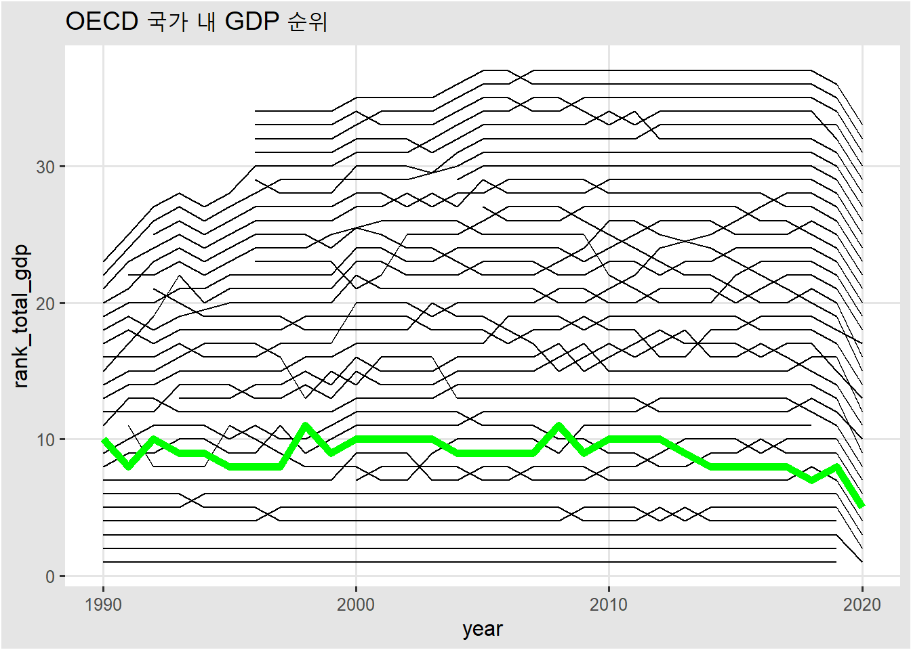
rank_gdp %>%
ggplot(aes(x = year, y =rank_per_gdp , fill = nation ))+
geom_line()+
geom_line(data = rank_gdp %>% filter(nation =="한국"),color = "green",size =2)+
labs(title = "OECD 국가 내 1인당 GDP 순위")
rank_gdp %>%
filter(year<=2019) %>%
filter(nation == "한국") %>%
pivot_longer(cols = contains("rank")) %>%
ggplot(aes(x = year, y =value , color = name ))+
geom_line()+
labs(y ="Rank")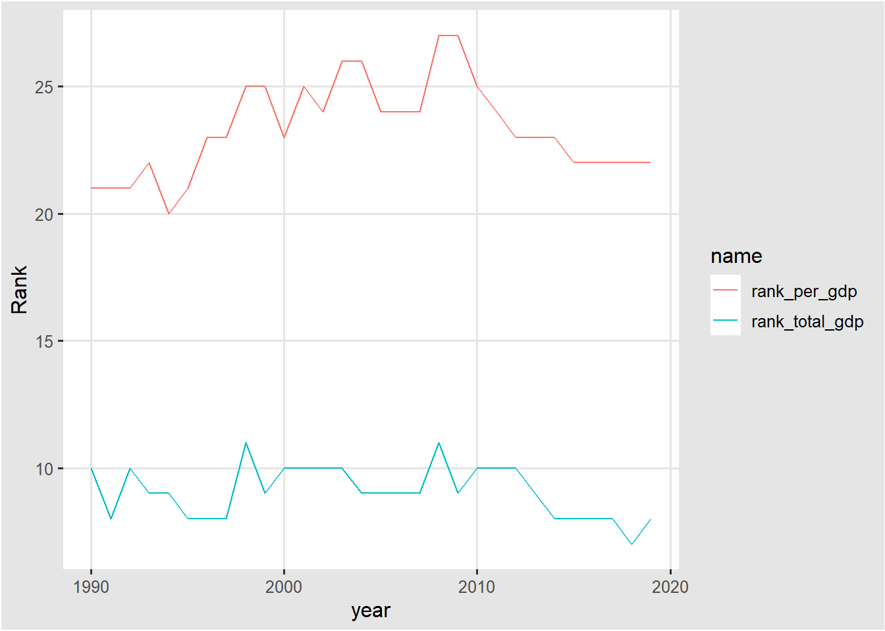
# 데이터가 OECD 가입국이라 우리나라보다 GDP가 높은 중국, 인도 등 없는 나라가 있습니다.1990년에서 부터 2019년 까지의 결과를 봤을때 OECD회원국 중, GDP의 순위는 높아졌지만, 1인당 GDP의 순위는 낮아진 것을 확인 할 수 있다.
인구 조정에 따라 결과가 달라지는 것을 확인했다. 이 경우에는 물론 분석 과제에 따라 인구 조정을 하지 않은 총 GDP를 사용 할 수도 있을 것이다.
다른 예시로, 나라별 의료체계 수준을 비교하려면, 총 병원수를 그 나라의 인구로 나눠 평균적인 밀도를 비교하는 것이 더 합리적일 수 있다.
3.1.2 물가조정
위의 데이터를 통해 더 확인해 보자. 변수 중, CPI(Consumer Price Index)라는 것이 있는데, 이는 기준년도를 100으로 뒀을때 그 해의 소비자 물가지수이다. 이를 통해 수십년 전의 물건 가격들을 현재 물가 기준으로 하여 계산할 수 있고 무역수지가 물가에 비해 얼마나 올랐는지 확인 할 수 있다. 만약 2010년이 기준년도이고, 2011년 CPI가 103이라면, 2010년에 비해 소비자 물가가 3% 증가한 것이다. 국가별 무역수지 추이를 CPI로 조정해 보면 아래와 같다.
gdp_national %>%
mutate(
trade_net_income = (export - import) ,
adjusted_trade_net_income = trade_net_income / CPI*100
) %>%
filter(nation=="한국") %>%
pivot_longer(cols = contains("net")) %>%
ggplot(aes(x= year, y= value ,color = name))+
geom_line()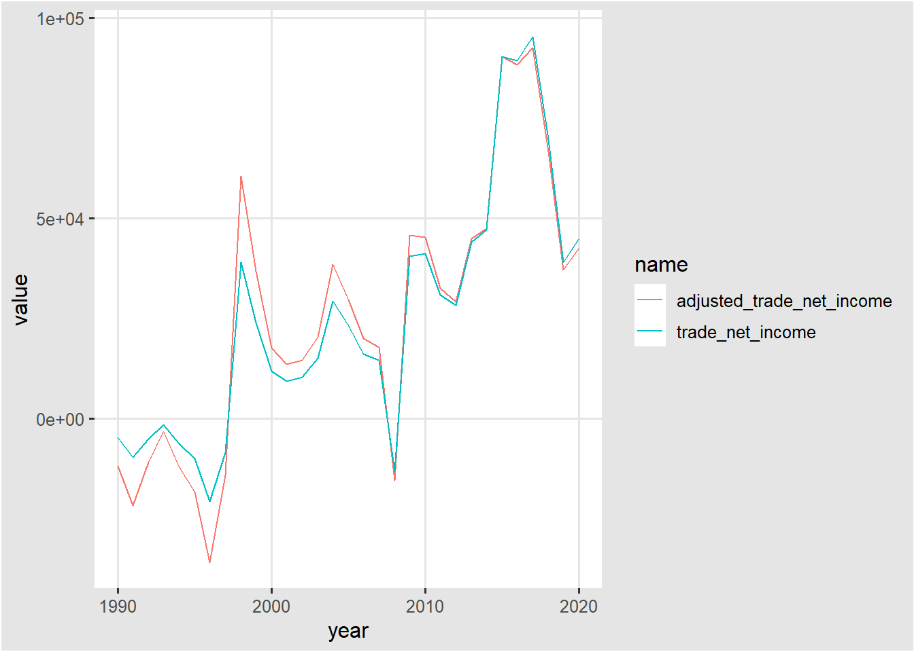
3.1.3 달력조정
어떤 기업에서 월별 매출을 비교해 보려고 한다. 이때 단순히 총 매출을 비교한다면, 2월은 다른달에 비해
낮게 나올 수도 있으므로 일별평균매출을 비교하는것이 더 합리적일 수 있다.
(주말, 공휴일이 많은달? 시차 조정? 등등 )
3.1.4 수학적 변환
데이터가 시간에 따라 분산이 커지거나 작아질 때 사용한다.
aus_production %>%
ggplot(aes(x = Quarter, y = Gas))+
geom_line()+
labs(
title = "변환 전"
)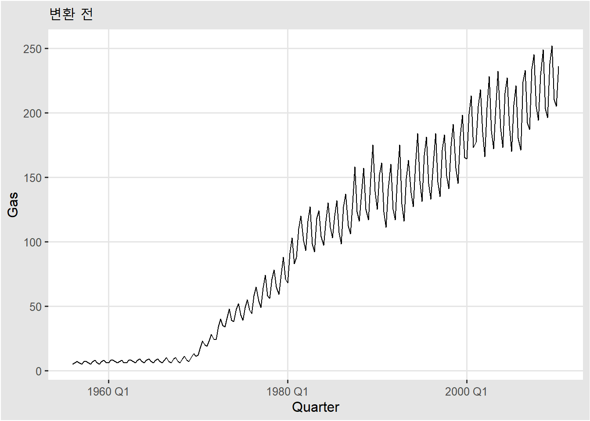
lambda <- aus_production %>%
features(Gas, features = guerrero) %>%
pull(lambda_guerrero)
aus_production %>%
mutate(boxcox = box_cox(Gas, lambda))#> # A tsibble: 218 x 8 [1Q]
#> Quarter Beer Tobacco Bricks Cement Electricity Gas boxcox
#> <qtr> <dbl> <dbl> <dbl> <dbl> <dbl> <dbl> <dbl>
#> 1 1956 Q1 284 5225 189 465 3923 5 1.78
#> 2 1956 Q2 213 5178 204 532 4436 6 2.00
#> 3 1956 Q3 227 5297 208 561 4806 7 2.19
#> 4 1956 Q4 308 5681 197 570 4418 6 2.00
#> 5 1957 Q1 262 5577 187 529 4339 5 1.78
#> 6 1957 Q2 228 5651 214 604 4811 7 2.19
#> 7 1957 Q3 236 5317 227 603 5259 7 2.19
#> 8 1957 Q4 320 6152 222 582 4735 6 2.00
#> 9 1958 Q1 272 5758 199 554 4608 5 1.78
#> 10 1958 Q2 233 5641 229 620 5196 7 2.19
#> # ... with 208 more rowsaus_production %>%
autoplot(box_cox(Gas, lambda)) +
labs(y = "",
title = latex2exp::TeX(paste0(
"Transformed gas production with $\\lambda$ = ",
round(lambda,2))))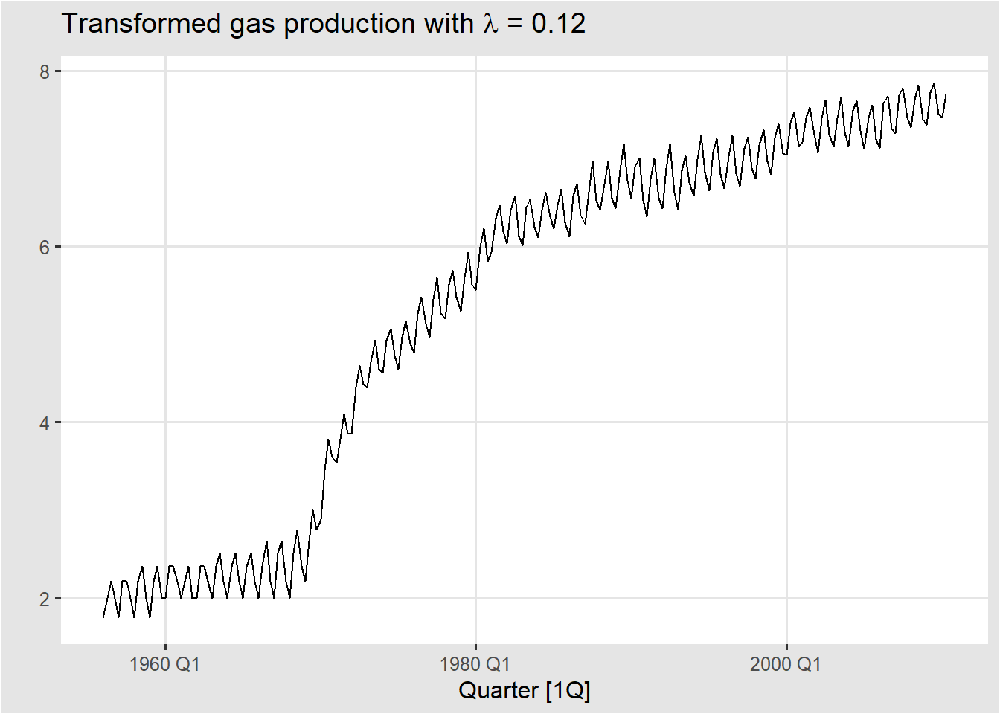
사전에 이런 조정 없이 분해를 하게 되면 실제 데이터가 함축하고 있는 의미를 제대로 잡아내지 못할 수 있고 예측 오차가 커지게 될 것이다. 따라서 다음 단계로 가기 전에 내가 분석하고 싶은 변수가 조정이 필요한지 짚고 넘어갈 필요가 있다.
3.2 시계열의 구성요소
각각의 관측치 \(y_{t}\) 는 \(S_{t}\) , \(T_{t}\), \(R_{t}\) 의 구성요소로 나누어 볼 수 있다.
\(T_{t}\) : 추세-주기(Trend-cycle) 구성요소
\(S_{t}\) : 계절(Seasonal) 구성요소
\(R_{t}\) : 관측치 \(y_{t}\)에서 위 두가지 요소를 뺀 나머지 부분이다.
3.2.1 모델 설정
\[ y_{t}=S_{t}+T_{t}+R_{t} \] \[ y_{t}=S_{t}\times T_{t}\times R_{t} \]
위와 같이 관측치를 구성요소들의 합으로 분해할 것인지, 곱으로 분해할 것인지 2가지 방법을 고려할 수 있다.
계절 변동의 크기 또는 추세 주기 변동이 시간에 따라 달라지지 않는 경우 가법 분해가 가장 적절하다. 계절 패턴의 변동 또는 추세 주기 변동이 시간이 흐르면서 변하는 것으로 나타나면 곱셈 분해가 더 적절하다.
먼저, 각각의 요소가 어떻게 분해되는지 살펴보자
us_retail_employment <- us_employment %>%
filter(year(Month) >= 1990, Title == "Retail Trade")
classical_decomp<- us_retail_employment %>%
model(
classical_decomposition(Employed , type = "additive") #Employed ~ season(7)
) %>%
components() %>% as_tsibble()
classical_decomp#> # A tsibble: 357 x 8 [1M]
#> # Key: Series_ID, .model [1]
#> Series_ID .model Month Employed trend seasonal random season_adjust
#> <chr> <chr> <mth> <dbl> <dbl> <dbl> <dbl> <dbl>
#> 1 CEU4200000001 "classic~ 1990 1 13256. NA -75.5 NA 13331.
#> 2 CEU4200000001 "classic~ 1990 2 12966. NA -273. NA 13239.
#> 3 CEU4200000001 "classic~ 1990 3 12938. NA -253. NA 13191.
#> 4 CEU4200000001 "classic~ 1990 4 13012. NA -190. NA 13203.
#> 5 CEU4200000001 "classic~ 1990 5 13108. NA -88.9 NA 13197.
#> 6 CEU4200000001 "classic~ 1990 6 13183. NA -10.4 NA 13193.
#> 7 CEU4200000001 "classic~ 1990 7 13170. 13178. -13.3 5.65 13183.
#> 8 CEU4200000001 "classic~ 1990 8 13160. 13161. -9.99 8.80 13169.
#> 9 CEU4200000001 "classic~ 1990 9 13113. 13141. -87.4 59.9 13201.
#> 10 CEU4200000001 "classic~ 1990 10 13185. 13117. 34.6 33.8 13151.
#> # ... with 347 more rowsus_retail_employment %>%
model(
classical_decomposition(Employed, type = "additive")
) %>%
components() %>%
autoplot() +
labs(title = "Classical additive decomposition of total
US retail employment")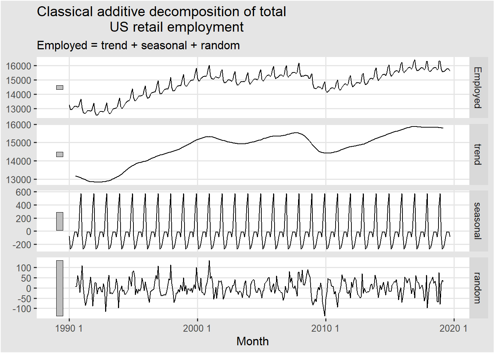
3.3 이동평균에 대한 이해
앞서 봤던 고전적 분해방법의 단계중 첫단계가 이동평균으로 추세-주기 구성요소를 계산하는 것이기 때문에 이동평균에 대한 이해가 필요하다. 다음과 같이 정의 된다.
\[ \hat{T}_{t}=\frac{1}{m}\sum_{j=-k}^{k}y_{t+j} \]
이동평균을 하게 되면 무작위성을 어느정도 제거하여 원래의 데이터보다 완만한 곡선을 그리게 된다.
3.3.1 m이 홀수인 경우
global_economy %>%
filter(Country == "Australia") %>%
autoplot(Exports) +
labs(y = "% of GDP", title = "Total Australian exports")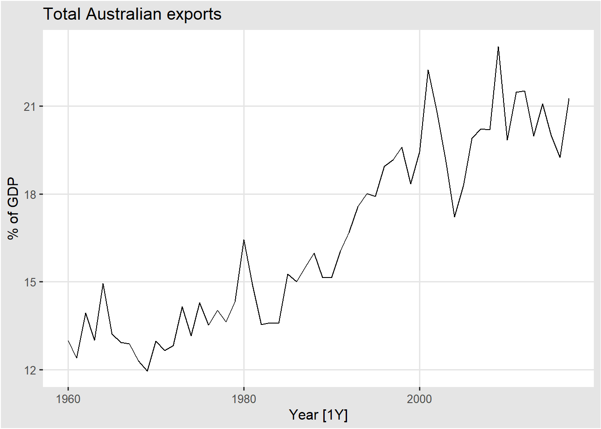
library(zoo)
aus_exports <- global_economy %>%
filter(Country == "Australia") %>%
mutate(
`3-MA` =rollmean(Exports,fill = NA,k = 3),
`5-MA` =rollmean(Exports,fill = NA,k = 5),
`7-MA` =rollmean(Exports,fill = NA,k = 7),
`9-MA` =rollmean(Exports,fill = NA,k = 9)
) %>%
pivot_longer(cols = contains("MA"))
aus_exports %>%
ggplot(aes(x=Year , y = Exports)) +
#geom_line()+
geom_line(aes(y = value), colour = "#D55E00") +
labs(y = "% of GDP",
title = "Total Australian exports") +
facet_wrap(~ name,ncol = 2)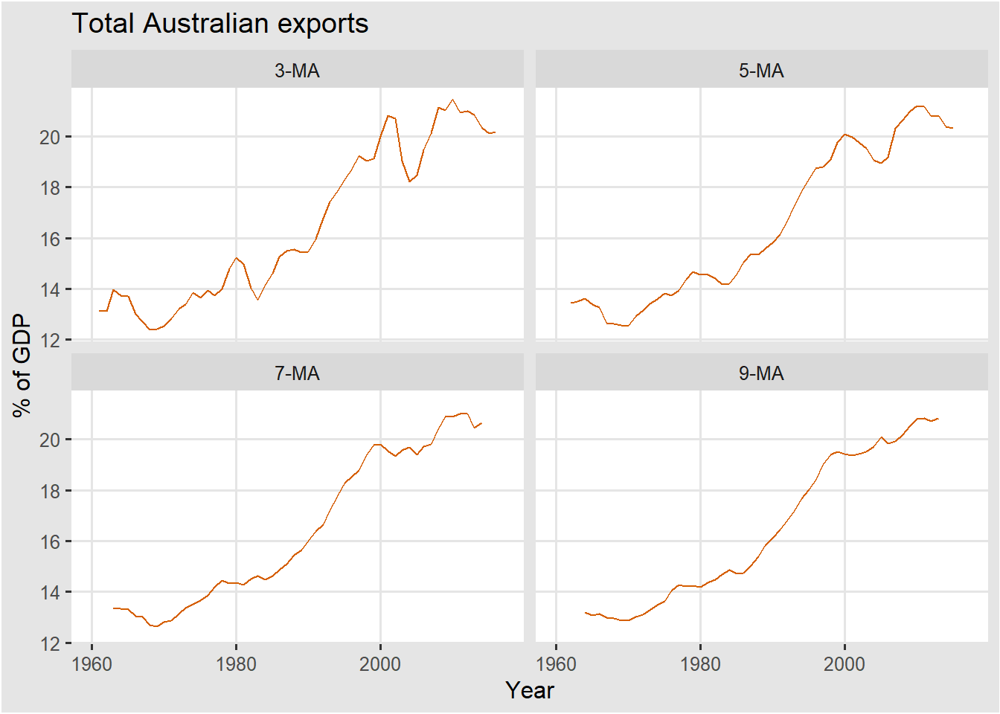
|
|
3.3.2 m이 짝수인 경우
beer <- aus_production %>%
filter(year(Quarter) >= 1992) %>%
select(Quarter, Beer)
beer_ma <- beer %>%
mutate(
`4-MA` = slider::slide_dbl(Beer, mean,
.before = 1, .after = 2, .complete = TRUE),
`2x4-MA` = slider::slide_dbl(`4-MA`, mean,
.before = 1, .after = 0, .complete = TRUE)
)
# mutate(`4-MA` =rollmean(Beer,fill = NA,k = 4)) %>%
# mutate(`2x4-MA` =rollmean(`4-MA`,fill = NA,k = 2,align = "right"))
|
|
\({\hat{T_{t}}=\frac{1}{2}\Big[\frac{1}{4}(y_{t-2}+y_{t-1}+y_{t}+y_{t+1})+\frac{1}{4}(y_{t-1}+y_{t}+y_{t+1}+y_{t+2})\Big]=\frac{1}{8}y_{t-2}+\frac{1}{4}y_{t-1}+\frac{1}{4}y_{t}+\frac{1}{4}y_{t+1}+\frac{1}{8}y_{t+2}.}\)
3.3.3 가중평균
\(\hat{T}_{t}=\sum_{j=-k}^{k}a_{j}y_{t+j},\)
이때 모든 \(a_{j}\)의 합이 1이고, \(a_{j}=a_{-j}\)을 만족해야 한다.
예를들어, 단순한 5-MA 말고, \(y_{t}\) 를 기준으로 멀어질 수록 가중치를 멀어지게 하려면, \(3\times3\)-MA 를 사용하면 가중치는 \(a=[\frac{1}{9},\frac{2}{9},\frac{3}{9},\frac{2}{9},\frac{1}{9}]\) 이 된다. 이렇게 가중치를 조절함으로써 추세의 완만한 정도를 조절할 수 있다.
3.4 다양한 분해방법
3.4.1 고전적 분해방법
고전적 분해 방법은 다른 시계열 분해방법의 시작점인만큼 계산이 간단하다.
고전적 분해에서는 계절 성분이 매년 일정하다고 가정한다.
tsibble 데이터의 한 주기가 어느정도 되는지에 따라 m-MA의 m을 설정한다. 예를 들어, 월별 데이터 인데 분기별 추세를 보고자 한다면, m = 4 가 될 것이고, 월별 추세를 보려면 m = 12, 일별데이터인데 주별 패턴을 확인하고 싶다면 m = 7 이 될 것이다.
3.4.1.1 가산분해
1단계, 추세-주기 요소를 계산한다.m이 짝수이면, 2 X m-MA 로 계산하고 홀수이면, m-MA로 계산한다.
2단계, \(y_{t}\)에서 추세-주기를 뺀다.
3단계, 추세-주기를 뺀 데이터를 각각의 계절 요소의 그룹별로 평균을 구한다. 예를 들어, m이 12인, 월별 계절 요소를 계산한다고 생각하자. 데이터에서 2 x 12 MA 로 계산한 추세-주기 요소를 원래 있던 시계열 정보에서 뺀 후, 그 데이터를 월별로 그룹을 지어 평균을 계산하면 된다.
4단계, 3단계의 결과값에서 계산된 값들의 평균을 구하여 각각의 결과값에 빼준다. 이렇게 계산된 값이 계절 요소이다. 즉, 계절요소의 평균은 0이 된다.
5단계, 원래의 시계열 정보에서 계산된 추세-주기,계절 요소를 빼면 나머지 요소가 계산된다.
classical_decomp<- us_retail_employment %>%
model(
classical_decomposition(Employed, type = "additive")
) %>%
components() %>% as_tsibble()
calculate_seasonal <- classical_decomp %>%
select(Month,Employed,trend,seasonal) %>%
mutate(seasonal_step_2 = Employed - trend) %>%
index_by(month(Month)) %>%
mutate(seasonal_step_3 = mean(seasonal_step_2,na.rm =T)) %>%
ungroup() %>% view
seasonal_step_4 <- calculate_seasonal %>%
pull(seasonal_step_3) %>% unique() %>% mean()
# unique를 해주는 이유는 이 데이터와 같이 주기가 딱 떨어지지 않을 수 있기 때문이다.
# 1~12월*29번, + 1~9월 이있음.
seasonal_step_4#> [1] -0.01894243| seasonal | seasonal_step_2 | seasonal_step_3 | seasonal_step_5 | Month |
|---|---|---|---|---|
| -75.461230 | NA | -75.48017 | -75.461230 | 1990 1 |
| -273.051173 | NA | -273.07011 | -273.051173 | 1990 2 |
| -253.195856 | NA | -253.21480 | -253.195856 | 1990 3 |
| -190.219599 | NA | -190.23854 | -190.219599 | 1990 4 |
| -88.923022 | NA | -88.94196 | -88.923022 | 1990 5 |
| -10.388349 | NA | -10.40729 | -10.388349 | 1990 6 |
| -13.311661 | -7.662500 | -13.33060 | -13.311661 | 1990 7 |
| -9.992695 | -1.195833 | -10.01164 | -9.992695 | 1990 8 |
| -87.379333 | -27.470833 | -87.39828 | -87.379333 | 1990 9 |
| 34.634747 | 68.454167 | 34.61580 | 34.634747 | 1990 10 |
| 394.300408 | 372.362500 | 394.28147 | 394.300408 | 1990 11 |
| 572.987764 | 610.708333 | 572.96882 | 572.987764 | 1990 12 |
us_retail_employment %>%
model(
classical_decomposition(Employed, type = "additive")
) %>%
components() %>%
autoplot() +
labs(title = "Classical additive decomposition of total
US retail employment")
classical_decomp%>%
gg_subseries(seasonal)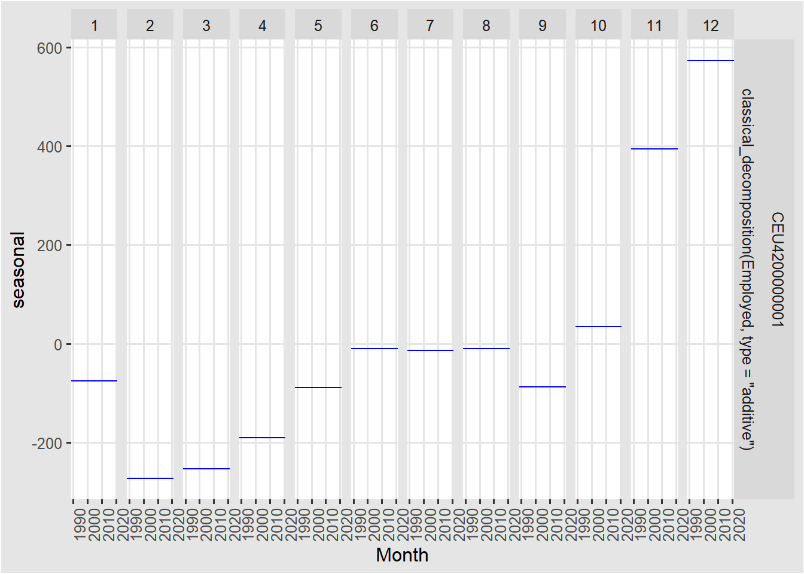
3.4.1.2 승법분해
1단계, 추세-주기 요소를 계산한다.m이 짝수이면, 2 X m-MA 로 계산하고 홀수이면, m-MA로 계산한다.
2단계, \(y_{t}\)에서 추세-주기를 나눈다.
3단계, 2단계에서 계산된 값들에 계절 요소의 그룹별로 평균을 구한다. 예를 들어, m이 12인, 월별 계절 요소를 계산한다고 생각하자. 데이터에서 2 x 12 MA 를 계산한 추세-주기 요소를 원래 있던 시계열 정보에서 나눈 후, 그 데이터를 월별로 그룹을 지어 평균을 계산하면 된다.
4단계, 3단계의 계산 결과나온 요소들의 합이 m이 되도록 크기 조정을 해준다. 이 값이 계절 요소가 된다.
5단계, 원래의 시계열 정보에서 계산된 추세-주기,계절 요소를 나누면 나머지 요소가 계산된다.
classical_decomp<- us_retail_employment %>%
model(
classical_decomposition(Employed, type = "multiplicative")
) %>%
components() %>% as_tsibble()
seasonal_mult <- classical_decomp %>%
select(Month,Employed,trend,seasonal) %>%
mutate(seasonal_step_2 = Employed / trend) %>%
index_by(month(Month)) %>%
mutate(seasonal_step_3 = mean(seasonal_step_2,na.rm =T)) %>%
select(contains("seasonal"))
seasonal_step_3_scale<- sum(unique(seasonal_mult$seasonal_step_3))
seasonal_step_3_scale#> [1] 11.99982seasonal_mult <- seasonal_mult %>%
mutate(seasonal_step_4 = seasonal_step_3/seasonal_step_3_scale*12)| month(Month) | seasonal | seasonal_step_2 | seasonal_step_3 | Month | seasonal_step_4 |
|---|---|---|---|---|---|
| 1 | 0.9949463 | NA | 0.9949310 | 1990 1 | 0.9949463 |
| 2 | 0.9814765 | NA | 0.9814614 | 1990 2 | 0.9814765 |
| 3 | 0.9827143 | NA | 0.9826991 | 1990 3 | 0.9827143 |
| 4 | 0.9869857 | NA | 0.9869705 | 1990 4 | 0.9869857 |
| 5 | 0.9938970 | NA | 0.9938817 | 1990 5 | 0.9938970 |
| 6 | 0.9992581 | NA | 0.9992427 | 1990 6 | 0.9992581 |
| 7 | 0.9990583 | 0.9994185 | 0.9990429 | 1990 7 | 0.9990583 |
| 8 | 0.9993224 | 0.9999091 | 0.9993070 | 1990 8 | 0.9993224 |
| 9 | 0.9941725 | 0.9979095 | 0.9941572 | 1990 9 | 0.9941725 |
| 10 | 1.0024237 | 1.0052188 | 1.0024083 | 1990 10 | 1.0024237 |
| 11 | 1.0267098 | 1.0284473 | 1.0266940 | 1990 11 | 1.0267098 |
| 12 | 1.0390354 | 1.0467532 | 1.0390193 | 1990 12 | 1.0390354 |
us_retail_employment %>%
model(
classical_decomposition(Employed, type = "multiplicative")
) %>%
components() %>%
autoplot() +
labs(title = "Classical additive decomposition of total
US retail employment")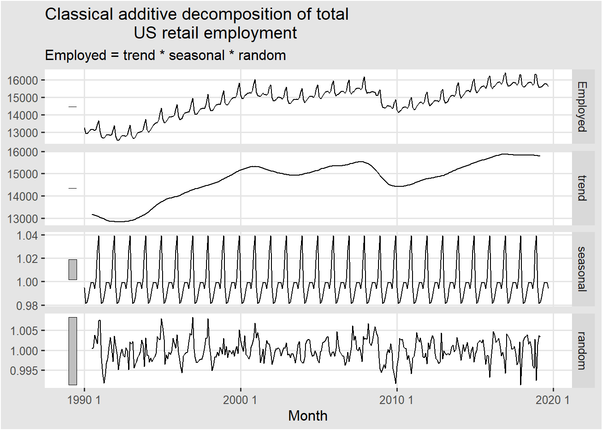
3.4.1.3 한계점
- 추세주기의 추정치는 처음과 마지막 몇개를 사용할 수 없다. 따라서 나머지 요소도 계산할 수 없다.
- 급격한 상승과 하락을 지나치게 부드럽게 하는 경향이 있다.
- 계절 성분이 시간이 흘러도 변하지 않는다.
3.4.2 X11
미국 인구조사국에서 시작되었으며 캐나다 통계청에서 추가로 개발했다.
seasonal package 필요
x11_dcmp <- us_retail_employment %>%
model(x11 = X_13ARIMA_SEATS(Employed ~ x11())) %>%
components()
autoplot(x11_dcmp) +
labs(title =
"Decomposition of total US retail employment using X-11.")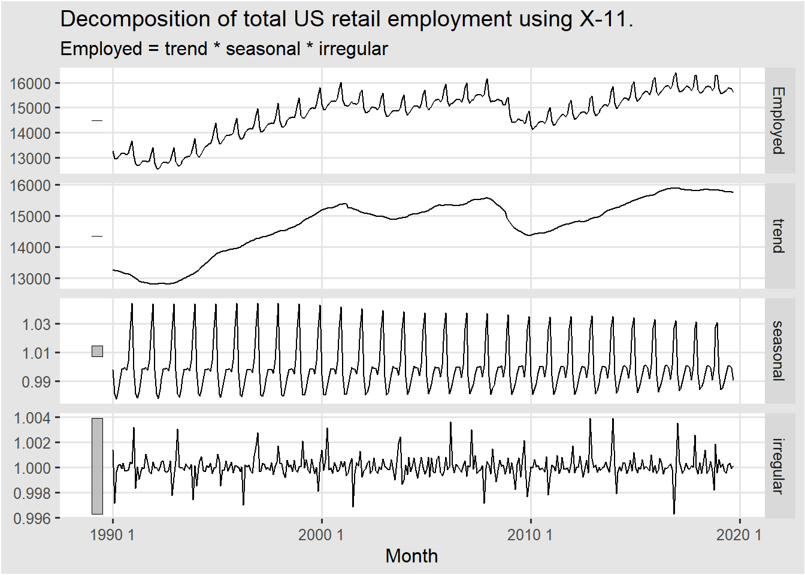
x11_dcmp %>%
gg_subseries(seasonal)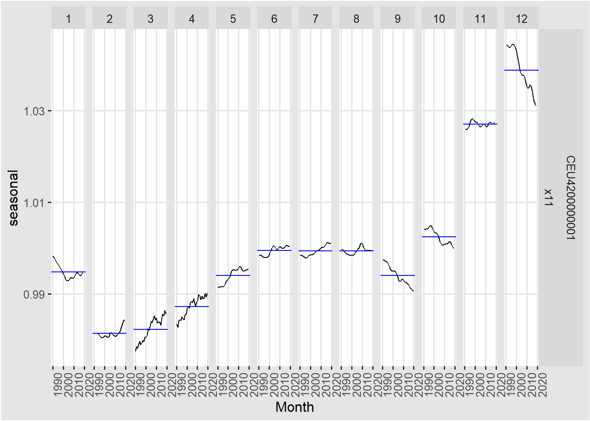
3.4.3 SEATS
Seasonal Extraction in ARIMA Time Series, 스페인 은행에서 개발되었고, 현재 전 세계 정부 기관에서 많이 사용되고 있다고 한다.
seats_dcmp <- us_retail_employment %>%
model(seats = X_13ARIMA_SEATS(Employed ~ seats())) %>%
components()
autoplot(seats_dcmp) +
labs(title =
"Decomposition of total US retail employment using SEATS")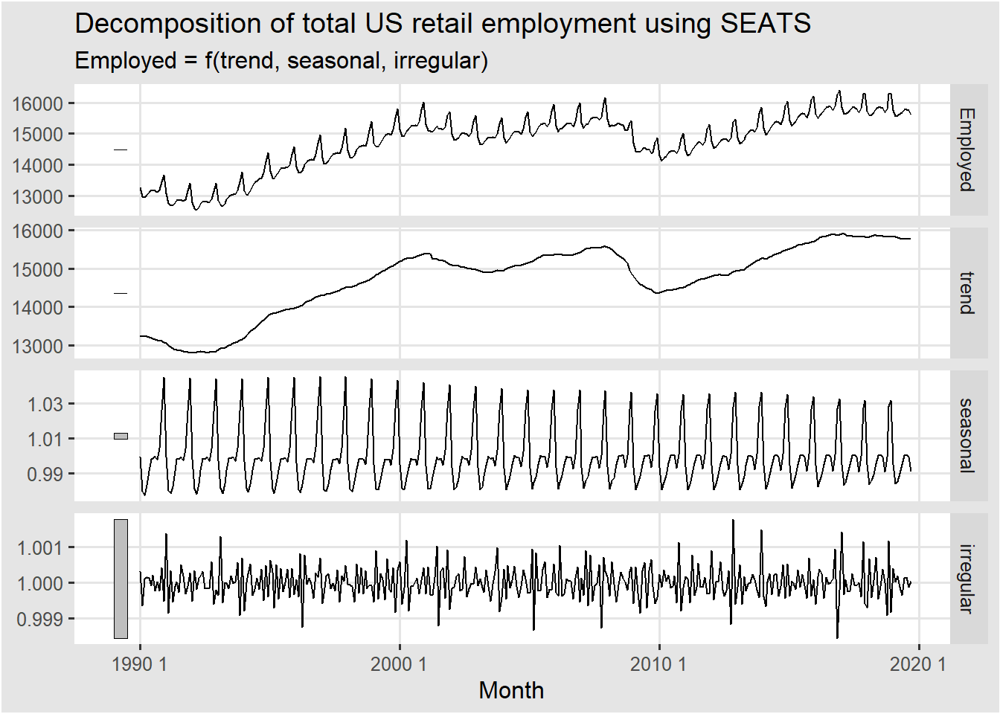
3.4.4 STL
Seasonal and Trend decomposition using Loess
us_retail_employment %>%
model(
STL(Employed ~ trend(window = 7) +
season(window = 7),
robust = TRUE)) %>%
components() %>%
autoplot()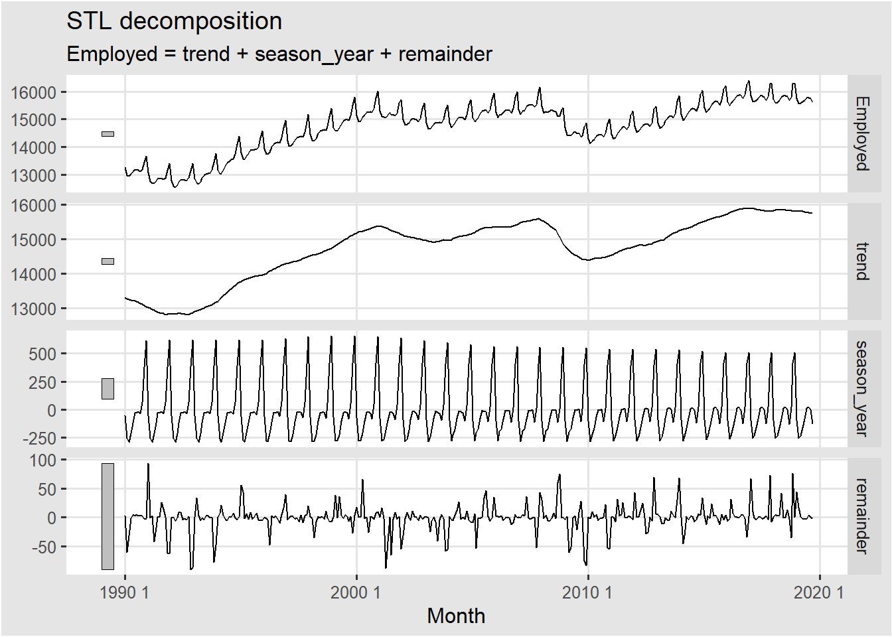
3가지 방법 모두 고전적 분해방법의 한계점 중, 결측값문제와 계절성분이 단순반복 되는 점을 극복했다.